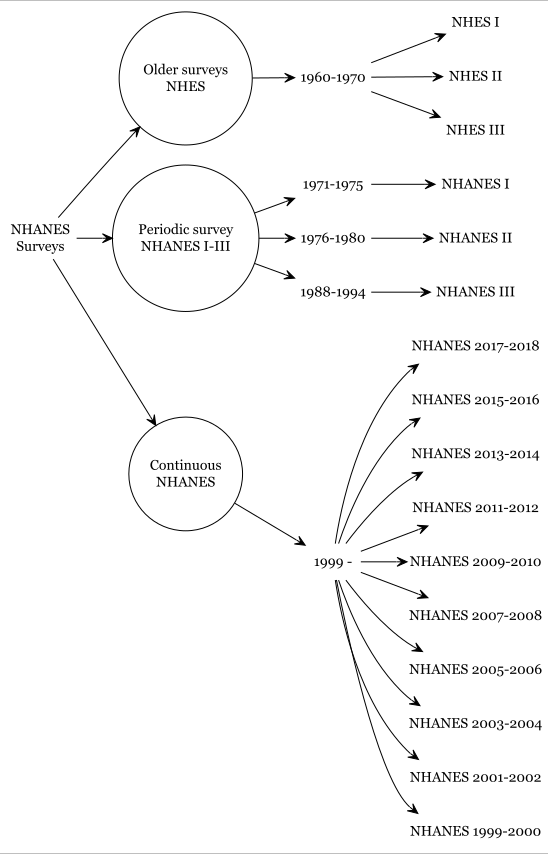

Descriptions
This tutorial introduces CCHS as a cross-sectional survey that collects health-related data and discusses its objectives and data usage. Additionally, it highlights the survey’s evolution and redesigns. For NHANES, the tutorial covers the importance of the dataset, its sampling procedures, history, data files, and documents. It also discusses how to combine data from different cycles, handle missing data, and deal with outliers. NHIS, another CDC-supported survey, is briefly introduced as a source of annual health-related data. There are some changes in the dataset due to the COVID-19 pandemic, e.g., fewer variables compared to pre-pandemic datasets. Otherwise, the main purpose of these datasets remained the same across survey cycles.
CCHS
Overview
CCHS is a cross-sectional survey that collects vital health-related data, including health status, healthcare utilization, and health determinants, from the Canadian population. Available in both official languages, this survey relies on a substantial sample size to provide reliable estimates at various geographical levels every two years.
Objectives of the CCHS
The CCHS has four primary objectives: supporting health surveillance programs at national, provincial, and intra-provincial levels; offering a single data source for health research on small populations and rare characteristics; providing timely and easily accessible information to a diverse user community; and maintaining flexibility to address emerging health issues within the population.
Data Products and Usage
The CCHS generates annual microdata files and combines two years of data for analysis. Users can also combine data from different years to study specific populations or rare characteristics. The data is primarily used for health surveillance and population health research, benefiting federal and provincial health departments, social service agencies, government bodies, and researchers from various fields. Non-profit health organizations and the media also utilize CCHS results to raise awareness about health concerns.
Evolution and Redesigns
The CCHS started collecting data in 2001, transitioning to annual data collection in 2007 with a sample size adjustment to 65,000 respondents per year. It has undergone two significant redesigns to enhance its utility. The 2015 redesign updated sampling methods, adopted a new sample frame, modernized health content, and reviewed the target population. In 2022, the survey underwent another redesign, further updating content and transitioning to an online electronic questionnaire (EQ) for direct self-reporting by selected respondents. Both redesigns involved extensive consultations with stakeholders, including federal, provincial, and territorial partners, health region authorities, and academics.
NHANES
The National Health and Nutrition Examination Survey (NHANES), conducted by the National Center for Health Statistics (NCHS), is a cornerstone of public health research in the United States. It’s designed to assess the health and nutritional status of both adults and children across the nation. What makes NHANES particularly powerful is its unique combination of
- in-home interviews and
- comprehensive health examinations conducted in mobile examination centers (MECs)
- Objective physical measurements such as blood pressure, dental exams, and anthropometrics, and
- Biological specimens, such as blood and urine, for laboratory testing)
Through this dual approach, NHANES collects a wide array of data, allowing researchers and policymakers to get a clearer picture of the nation’s health, track trends in diseases and risk factors, and develop informed public health policies. The data covers the noninstitutionalized civilian U.S. population, meaning it includes most people except for those in settings like nursing homes, prisons, or on active military duty. These surveys have been administered in two-year cycles since 1999.
The Blueprint: The NHANES Sample Design 🗺️
Sampling Procedure: - Not obtained via simple random sample - Multistage sample designs - A sample weight is assigned to each sample person where weight = the number of people in the target population represented by that sample person in NHANES.
NHANES uses a complex, probabilistic multi-stage sampling method. This ensures that the relatively small number of people who participate can accurately reflect the entire country. It is a probabilistic sample, meaning we know the probability of selection for all individuals. However, the sample is unlikely to be representative on its own, as some under- or oversampling occurs. For example, households with characteristics like being African American, Mexican American, low-income White American, or having persons aged 60+ are often oversampled.
To obtain population-level estimates, it is crucial to utilize the survey’s design features (weights, strata, and PSU/clusters).
The design involves four distinct stages:
Stage 1: Primary Sampling Units (PSUs)
The first step is to divide the 50 states into approximately 3,100 counties or geographically contiguous areas, which serve as PSUs. Each PSU is assigned to a stratum (e.g., based on urban/rural status or size). Counties are then randomly selected, often using a probability proportionate to size (PPS) method.
Stage 2: Segments
Each selected county is broken down into smaller geographic areas called segments, typically containing at least 50-100 housing units. These segments are then randomly selected, also often using PPS.
Stage 3: Dwelling Units (DUs)
Within each chosen segment, a list of all dwelling units (which includes houses, apartments, and some group quarters like dorms) is created. From this list, a random subsample of households is selected.
Stage 4: Individuals
In the final stage, all eligible individuals within the selected households are listed. From this list, a subsample of individuals is chosen to participate in the survey based on their sex, age, race and Hispanic origin, and income.
Survey History 🔄
The NHANES program has a long history, evolving from the earlier National Health Examination Surveys (NHES) to its current continuous format.
Key evolutions include:
From Cyclical to Continuous: Early NHANES surveys were conducted in separate cycles (NHANES I, II, and III). Since 1999, NHANES has been a continuous, annual survey, which allows for more timely data and the ability to track trends more effectively. The data is typically released in two-year cycles to ensure stable and reliable estimates.
Changes in Oversampling: The groups that are oversampled have changed over time. For example, from 1999 to 2006, the survey oversampled Mexican-American individuals. Starting in 2007, this was expanded to include all Hispanic persons. In 2011, an oversample of Asian persons was added to the design. The income threshold for oversampling low-income non-Hispanic white and other individuals also changed from at or below 130% of the federal poverty level to at or below 185% in the 2015-2018 survey cycle.
Adapting to Challenges: The COVID-19 pandemic disrupted the 2019-2020 data collection cycle. To address this, the partially completed 2019-2020 data were combined with the full 2017-2018 cycle to create a nationally representative “prepandemic” dataset covering 2017 to March 2020.
NHANES Data Files and Documents 📂
File Format
The Continuous NHANES files are stored on the NHANES website in the SAS transport file format (.xpt). This format can be imported into most major statistical packages.
Continuous NHANES Components
Broadly, continuous NHANES data are available in 5 categories: - Demographics - Dietary - Examination - Laboratory - Questionnaire
To manage file size and documentation, the data is separated into five main components:

Data Analysis Considerations
Combining Data
It is possible to combine datasets from different two-year cycles to increase sample size and statistical power. However, since NHANES is a cross-sectional survey, identifying the same person across different cycles is not possible in the public-use datasets. When appending data, ensure that variable names and definitions are consistent across the cycles being combined. Within a single cycle, each participant has a unique identifier, SEQN, which should be used for merging different data files (e.g., demographics and laboratory data).
Missing Data and Outliers
The CDC provides the following guidance for handling missing data and outliers:
- Missing Data <10%: If less than 10% of data for a variable is missing, you can generally proceed with analysis. If it’s more than 10%, you should assess whether the missingness is systematic and consider imputation or weight adjustments.
- “Refused” or “Don’t Know”: These responses should be recoded as missing values to avoid distorting statistical results.
- Outliers: Be cautious of outliers, especially those with large survey weights, as they can disproportionately influence estimates. Analysts must decide whether to include or exclude these influential points.
NHANES Documents
Each data file is accompanied by essential documentation to guide its use.

Helpful Websites: - NHANES Design - Variable Search
Making Sense of the Data: Survey Weights and Variance Estimation ⚖️
Because of its complex design and oversampling, analyzing NHANES data isn’t as simple as plugging the numbers into standard statistical software. Two key concepts are crucial for accurate analysis:
Survey Weights
Each participant in NHANES is assigned a survey weight. This weight represents the number of people in the U.S. population that the participant represents. For example, a single participant might represent 20,000 other people with similar characteristics. These weights are essential because they account for: * The unequal probabilities of selection at different stages of sampling. * Nonresponse from individuals who were selected but chose not to participate. * Differences between the sample and the overall U.S. population.
Using these weights allows researchers to produce estimates that are truly representative of the national population.
Variance Estimation
Standard statistical tests often assume a simple random sample, which NHANES is not. Because of its clustered design, observations are not independent. Therefore, special techniques are needed to accurately calculate the variance and standard errors of estimates. The National Center for Health Statistics (NCHS) recommends using the Taylor series linearization method for variance estimation in NHANES data. Public-use data files include masked variance units to facilitate this process while protecting participant confidentiality.
- PSU variables and
- strata variables
Conclusion
NHANES is an invaluable resource for medical and public health professionals. Its rigorous, multi-stage design ensures that the data collected are representative of the U.S. population. By understanding the intricacies of its design, including the stages of sampling, the use of oversampling, and the importance of survey weights and proper variance estimation, students can confidently and accurately utilize this rich dataset to answer pressing public health questions.
NHIS
Like NHANES, National Health Interview Survey (NHIS) is supported by the CDC and is a large-scale multi-stage cross-sectional survey. The NHIS survey includes information on population disease prevalence, extent of disability, and use of health care services. In contrast to the NHANES that provides data every 2 years, NHIS provides data annually.
To obtain population-level estimate, we must utilize the survey features (weights, strata, PSU/cluster)
References
CDC. 2023. “NHANES Web Tutorial Frequently Asked Questions (FAQs).” https://wwwn.cdc.gov/nchs/nhanes/continuousnhanes/faq.aspx.
CDC,NCHS. 2023. “National Health and Nutrition Examination Survey Data.” https://wwwn.cdc.gov/nchs/nhanes/.